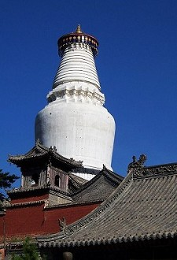
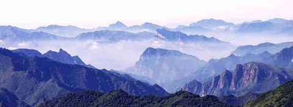
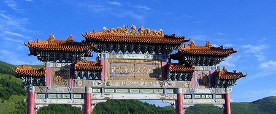
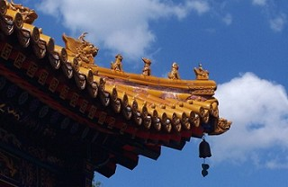

五台佛影？
冯冯
五台山距北京很近，旅游方便，五台山的观光重点之一，是与峨眉山齐名的佛灯。五台山的高峰，有三千多公尺海拔，冰雪云雾很多，可比峨眉。也可见到雾气浪潮中的碧光点点涌现。称为佛灯奇观，其实是游离的磷火，不过世俗宁称之为佛灯。
五台山另一著名观光点，是一座密教佛寺，传说清朝皇帝顺治爱妃死后，来此出家为僧，其子康熙皇帝诣寺寻访，却寻不着父亲，寺中亦无人知晓顺治出家之事，传说康熙疑心一个打扫老僧是顺治，但再寻已无踪迹。
顺治以皇帝而出家，事无佐证，但是五台山人士坚信有此事体，游客被导游带领，指指点点，煞有其事，平添趣味。

使游客感动的故事，是传说杨五郎也曾在此寺出家的悲惨。杨五郎是北宋杨令公杨业的第五子，杨令公有六儿子，在抗拒辽国侵略的战争中，杨家将立下伟功，但是在黄河金沙滩一场大战中，杨令公战败，自杀于李陵石碑，（一说是自刎，另一说是以头撞石碑），杨大郎、二郎、三郎，全部战死，杨六郎被奸臣潘美绑在柱上，乱箭处死以治败兵之罪。杨家全军覆没，杨四郎被辽兵所俘，押往辽京幽州（今之北京），被辽主萧太后招为驸马。至令京戏有“四郎探母”一剧，描写四郎偷越边防，南下探望母亲杨令婆。故事与唱曲，令人泪下，至于杨五郎，则于兵败时，化装为僧人，逃到五台上出家，传说是在显通寺，五郎从此消失。杨家将一门忠烈，于史有据，在其故乡也建有杨氏家祠，传说杨家将男丁都战死沙场，最后只余下一个孙子杨宗保，取妻穆桂英，善于用兵，率领杨令婆及杨家女将，为国效劳，京戏“穆桂英挂帅”，就是演述此段故事。

今日的五台山，已毫无杨家史迹可寻，只余下一个传说，问寺僧，也都瞠然以对，但是游客仍然是怀着缅怀心情去观光，穿凿附会的点滴，说什么杨五郎曾在某处练棍棒，曾下山去救助杨宗保脱出敌手......这一类小故事，就很能满足游客了。
笃信佛教的游客，则向往于另一个传说：是有人于某年某月某日，无意中拍摄到空中云端出现的阿弥陀佛，此张黑白照片，在五台山的纪念品小店或摊贩，都随处有售，其实，此一照片，一看就知是拙劣的水墨画，绝非真迹，照中的阿弥陀佛，是世俗传说的大肚胖和尚，毋宁是更似布袋和尚，笑口嘻嘻的。此一伪照，就如另一张“观音骑龙”照片一样，到处有售，都说是从天空拍摄的，站在一条黑龙颈部的观音菩萨像，也是一张非常拙劣的水墨画，并非出自画家手笔，倒似是乡人涂鸦，此一伪照，在两岸任何寺庙附近的摊贩均有售，真是骗尽苍生！
 没法子，因为众生多着相，误以为佛菩萨可以形相相见，乃被拙劣手笔画像所骗！殊不知，佛菩萨是无形无色无相，金刚经名言：“有相俱妄”！
摊贩售卖伪造佛影，是为了牟利，并非为了推广佛教，比之更糟的，是在佛经扉页印出伪造佛影，以之接引信佛！这是欺人自欺，骗人自骗！明眼人一看，就知是伪造！发心者印经，用意是弘杨佛教，怎料印了伪影，收了反效果，在坊间流传的佛教经书之中，就有好几种版本印有乘龙观音“真影”，这一类的拙劣水墨画伪造的佛影！
图片出处
原载《佛网》网站
2000 年 ── 2002 年